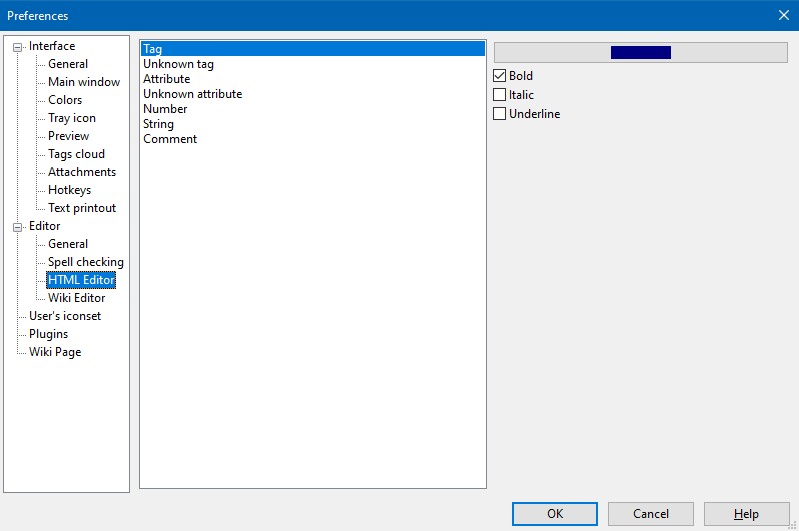

Editor - HTML editor

This section contains settings for HTML code highlighting on an HTML page and on the HTML tab for a wiki page. Here one can change font colors and font attributes for HTML tags, their attributes, numbers, comments, strings in HTML format as well as invalid HTML elements.
The font face and size can be changed in Editor - General section.